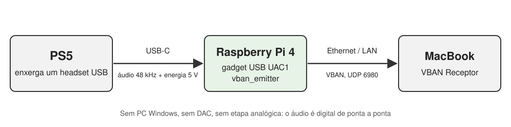

Utilizando um Pi 4 como saída de áudio de um PS5
Um Raspberry Pi que se passa por headset USB para levar o áudio do jogo até um MacBook pela rede
Publicado em 9 de outubro de 2026

A montagem inteira: um Raspberry Pi 4 em cima do PS5, um cabo USB-C até a porta frontal do console (áudio e energia) e um cabo Ethernet.
Eu queria o áudio do PS5 no meu MacBook Pro. Parece trivial até você listar as saídas de áudio do console: HDMI, USB (só para um aparelho que aceite áudio digital) e a entrada P2 do controle. A entrada P2 do MacBook até aceita sinal, mas é o microfone mono de um headset, então não serve para o áudio estéreo de um jogo.
A montagem que funcionava até agora tinha quatro etapas: um DAC Fosi Audio K7 na USB do PS5, a saída RCA dele na entrada de linha do meu desktop Windows, o Voicemeeter mandando isso pela rede com VBAN, e o app VBAN Receptor tocando no Mac. Funciona, mas mantém um desktop inteiro ligado só para levar o áudio de um lado do cômodo para o outro, e no caminho o sinal passa de digital para analógico e volta.
A pergunta era se um Raspberry Pi conseguiria substituir o desktop usando só o que já estava no meu escritório: alguns Pis, do Pi 1 B ao Pi 4. Sem placa de captura, sem cabo novo, sem fonte extra.
Números em resumo
0
equipamentos comprados: só um Pi 4, um cartão SD e cabos que eu já tinha
48 kHz
estéreo em 16 bits, digital do PS5 até o Mac
188
pacotes VBAN por segundo na rede (48.000 amostras / 256 por pacote)
~35 s
para o áudio voltar depois que o PS5 sai do repouso, sem nenhuma ação manual
A ideia: fazer o Pi parecer um headset
O Pi não tem entrada de áudio analógica e as portas HDMI dele são só de saída, então a saída RCA do K7 não tinha onde entrar. Sobrava um único caminho digital: a própria USB do PS5. Se o Pi conseguisse se apresentar ao console como uma placa de som USB, o PS5 mandaria o áudio direto para ele, sem DAC e sem etapa analógica.
O Linux faz isso com o framework de gadget USB, que permite a uma placa funcionar como dispositivo USB em vez de host. O hardware precisa suportar, e isso eliminou todos os Pis menos um. Nos Pi 1, 2 e 3 modelo B, o único controlador USB fica atrás do hub interno. No Pi 4, a porta USB-C (a que normalmente serve de alimentação) está ligada a um controlador que funciona em modo device.
A segunda informação veio do próprio K7: ele só funciona no PS5 quando está
no modo USB Audio Class 1.0 (UAC1). Ao que tudo indica, o PS5 ignora aparelhos
UAC2, e isso é um problema, porque o gadget de áudio pronto do Linux, o g_audio, sobe
como UAC2 por padrão. A saída é montar o gadget à mão via configfs com a função
uac1, e o kernel padrão do Raspberry Pi já vem com ela habilitada
(CONFIG_USB_CONFIGFS_F_UAC1=y), então não foi preciso recompilar nada.


A cadeia nova: o PS5 acha que está falando com um headset, e o Pi repassa tudo para o Mac pela rede local.
Como ficou
- O gadget é um aparelho UAC1 com reprodução estéreo a 48 kHz/16 bits e sem microfone, o mesmo perfil que o K7 apresenta ao console.
- O stream é enviado pelo
vban_emitter, das ferramentas open-source quiniouben/vban. Ele lê o gadget como uma placa de captura ALSA comum e manda pacotes VBAN para o Mac, então o VBAN Receptor que escutava o desktop Windows continua funcionando, só com a origem trocada. - O destino é um nome, não um IP. O Pi envia para o nome mDNS do Mac
(
<mac>.local) e resolve esse nome de novo a cada 30 segundos. Se o Mac pegar outro endereço por DHCP, o emissor reinicia sozinho para o endereço novo. Testei simulando uma troca de endereço, e o stream acompanhou em cerca de 18 segundos. - O sistema é o Raspberry Pi OS Lite 64-bit, configurado no primeiro boot pelos
arquivos de
cloud-initna partição de boot do cartão: usuário, chave SSH, pacotes, a compilação dovbane dois serviços do systemd. Wi-Fi e Bluetooth ficam desligados para economizar energia, então o Pi usa Ethernet. - A energia vem do PS5, pelo mesmo cabo USB-C que leva o áudio. A porta USB-C
frontal segurou o Pi 4 sem nenhum alerta de subtensão (
vcgencmd get_throttledficou em0x0), inclusive enquanto ele compilava ovbanno primeiro boot.
O que deu errado no caminho
Um cabo só de carga. O primeiro boot parecia certo: o Pi
estava ligado, o gadget registrado, os serviços no ar. Mas o controlador dizia
not attached, e o kernel nunca registrou nenhuma conexão vinda do host. O PS5 estava
alimentando o Pi sem nunca conversar com ele. Trocar o cabo USB-C por um que transmite dados
resolveu: configured, high-speed, endereço atribuído.
Uma opção que parece outra coisa. No
vban_emitter, -c não é o número de canais. É uma lista de seleção
de canais, então -c2 mandaria só o canal 2, em mono, sem aviso. O número de
canais é -n, e a taxa padrão é 44,1 kHz, então o -r 48000 precisa
ser explícito. Ler o README antes de escrever o serviço pegou isso antes de chegar ao Mac.
Silêncio perfeito. Com a USB conectada, a captura estava rodando e o Pi mandava seus 188 pacotes por segundo, mas uma gravação de três segundos deu zero absoluto nos dois canais. O PS5 ainda não estava mandando o áudio para o aparelho USB, e ajustar a saída de áudio do console resolveu. Duas configurações importam: o aparelho USB precisa ser a saída selecionada, e Saída para fones de ouvido precisa estar em Todo o áudio; senão só o chat de voz vai para o headset.
O repouso desliga o Pi. Duas vezes. Esse foi o achado mais interessante. Mesmo com Fornecer energia às portas USB em Sempre no modo de repouso, o PS5 corta a energia da USB-C frontal por um instante quando entra no repouso e de novo quando acorda. Cronometrei um ciclo completo, com o Pi sendo monitorado a cada dois segundos:
| Momento | O que aconteceu com o Pi |
|---|---|
| PS5 começa a entrar em repouso | para de receber áudio; ~40 s depois perde energia, antes de o LED laranja ficar fixo |
| PS5 em repouso | a energia volta, ele faz o boot, e a conexão de dados USB fica desligada (not attached) |
| PS5 acorda | perde energia de novo em até 4 s |
| ~35 s depois de acordar | boot concluído, gadget configured, áudio tocando no Mac |
Para quem usa, simplesmente funciona, porque o áudio volta sozinho. O custo são dois cortes bruscos de energia por ciclo de repouso, todo dia, num cartão SD. A solução foi deixar o sistema somente leitura: a raiz agora roda em overlayfs (as gravações vão para a RAM e somem no reboot) e a partição de boot é montada só para leitura. Depois medi os contadores de escrita do cartão: zero escritas durante a operação. Puxar o cabo USB no meio do áudio virou um não evento: o Pi voltou a tocar cerca de meio minuto depois de o cabo ser recolocado.
O que ficou em aberto
Com o overlay ativo, todo boot registra
EXT4-fs (mmcblk0p2): orphan cleanup on readonly fs, e o kernel grava cerca de
8 KB no cartão durante a montagem. Tentei a correção óbvia (um boot limpo com o overlay
desligado, para a limpeza ser gravada, e depois o overlay de volta) e o aviso continuou. O arquivo
de órfãos está vazio, o superbloco não tem lista de órfãos e um e2fsck somente leitura
não encontra nada. Não sei por que o kernel ainda segue esse caminho. Como são 8 KB, com
journal, nos primeiros segundos do boot, deixei como um problema cosmético conhecido.
Também não medi a latência, então não há número para ela aqui. Se a sincronia com a imagem importa para o que você joga, meça na sua própria rede antes de confiar.
Como reproduzir
Você precisa de: um Raspberry Pi 4 (tem que ser o Pi 4, por causa do modo device na USB-C), um cabo USB-C que transmita dados, um cabo Ethernet, um cartão SD e o VBAN Receptor (ou o Voicemeeter) no computador que vai tocar o áudio.
1. Coloque a USB-C em modo device, no
/boot/firmware/config.txt:
[all] dtoverlay=dwc2,dr_mode=peripheral # opcional: economiza energia quando o Pi roda na USB do console dtoverlay=disable-wifi dtoverlay=disable-bt
2. Crie o gadget UAC1 via configfs (como root, a cada
boot; eu rodo isto num serviço oneshot do systemd depois do
sys-kernel-config.mount):
modprobe libcomposite G=/sys/kernel/config/usb_gadget/ps5audio mkdir -p $G && cd $G echo 0x1d6b > idVendor # Linux Foundation echo 0x0104 > idProduct # Multifunction Composite Gadget echo 0x0200 > bcdUSB mkdir -p strings/0x409 configs/c.1/strings/0x409 echo "PS5 Audio Bridge" > strings/0x409/product echo "UAC1" > configs/c.1/strings/0x409/configuration mkdir -p functions/uac1.usb0 echo 3 > functions/uac1.usb0/c_chmask # estéreo, host -> Pi echo 48000 > functions/uac1.usb0/c_srate echo 2 > functions/uac1.usb0/c_ssize # 16 bits echo 0 > functions/uac1.usb0/p_chmask # sem microfone, como o K7 ln -s functions/uac1.usb0 configs/c.1/ ls /sys/class/udc > UDC
3. Compile o vban e envie o stream. O gadget
aparece como a placa ALSA UAC1Gadget:
sudo apt install git build-essential autoconf automake pkgconf libasound2-dev git clone https://github.com/quiniouben/vban && cd vban ./autogen.sh && ./configure --disable-pulseaudio --disable-jack && make sudo install -m 0755 src/vban_emitter /usr/local/bin/ vban_emitter -i <ip-do-mac> -p 6980 -s PS5 \ -d hw:CARD=UAC1Gadget,DEV=0 -r 48000 -n 2
Sem host, ou enquanto o PS5 não manda áudio, a captura falha com
Input/output error e o emissor sai. No serviço do systemd, use
Restart=always e StartLimitIntervalSec=0 para ele nunca desistir. Para
seguir o Mac pelo nome, coloque o comando num script que resolva <mac>.local
com getent ahostsv4 e reinicie o emissor quando o endereço mudar.
4. No PS5: ligue o Pi na porta USB-C frontal e vá em Configurações → Som → Saída de áudio, escolha o aparelho USB e coloque Saída para fones de ouvido em Todo o áudio.
5. No Mac: no VBAN Receptor, selecione o stream
PS5, porta 6980. O app prende o stream ao IP do Pi, então, se o endereço do Pi
mudar, selecione o stream de novo.
6. Quando tudo funcionar, proteja o cartão:
sudo raspi-config nonint enable_bootro # partição de boot só leitura (fazer antes) sudo raspi-config nonint enable_overlayfs # raiz em overlayfs sudo reboot
Quando algo falhar, três leituras apontam o culpado:
| Checagem | Esperado | Se não |
|---|---|---|
cat /sys/class/udc/*/state |
configured |
not attached: cabo sem dados, ou o PS5 está em repouso |
/proc/asound/UAC1Gadget/pcm0c/sub0/status |
state: RUNNING |
closed: o PS5 não está mandando áudio para o aparelho USB |
tx_packets da eth0 em 5 s |
~188 por segundo | emissor parado: journalctl -u <serviço> |
O que ficou comigo
- O hardware antigo tinha a resposta. O K7 só funcionar no modo UAC1 foi o
detalhe que decidiu o desenho todo. Sem ele, o
g_audiopadrão (UAC2) teria sido a primeira tentativa, e o PS5 o teria ignorado. - Confira o link antes do software. Energia sem enumeração apontou direto para o cabo. Ler o estado do controlador USB levou segundos; depurar serviços teria levado muito mais.
- "Sempre" não quer dizer "sem interrupção". A opção de energia faz exatamente o que promete durante o repouso, mas não durante as transições, e só um teste cronometrado, com anotações de quando cada coisa aconteceu, deixou isso visível.
- Silêncio também é medição. Gravar três segundos e contar as amostras separou na hora "a cadeia está quebrada" de "o console está mandando o áudio para outro lugar".
Links
- Ferramentas VBAN de linha de comando (emissor/receptor) para Linux: github.com/quiniouben/vban
- Protocolo VBAN e VBAN Receptor: vb-audio.com/Voicemeeter/vban.htm
- Funções de gadget USB do Linux, incluindo a UAC1 e os atributos
c_*/p_*: docs.kernel.org/usb/gadget-testing.html config.txte overlays do Raspberry Pi: raspberrypi.com/documentation/computers/config_txt.html
Uma nota sobre como isto foi feito: a investigação e a implementação foram feitas em par com o Claude Code (o agente de programação com IA da Anthropic), que pesquisou os limites do hardware, preparou a imagem do cartão SD, configurou o Pi por SSH e fez as medições descritas acima. O objetivo, as decisões e os testes físicos (cabos, o console, os ciclos de repouso) são meus. O texto também foi redigido com o Claude, a partir do histórico real da sessão.